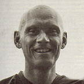

|
ON HUMILITY  |
Venerable Pabhakaro (Gordon Kappel) was born in Seattle, Washington
in 1948. he joined the U.S. Army in 1967 and was sent to Vietnam in
1969, where as a captain in the 1st Cavalry Division (Air Mobile) he
piloted helicopters. He came into contact with Buddhism while on rest-and-relaxation
(R&R) in Bangkok, where he visited several monasteries and met some
of the Western monks living there. |
|
The following teaching is adapted from a talk given by Venerable Pabhakaro
during a retreat in Scotland in August 1988. WHEN WE STOP TO INVESTIGATE THE TEACHINGS, we can see the importance of personal responsibility: of taking responsibility for what we do, what we say, and eventually for what we think. We see the possibility of developing something -- of cultivating our body, speech and mind. I personally felt very attracted to this way particularly because there was room to doubt and question. I was very inspired by the thought of not having to take anything on board just because it was written down; one was being encouraged to explore through meditation and self-enquiry. Now I'm in the position where I have the opportunity to share my experience; to teach. The way I was taught and trained was to open in the present moment, to the best of one's ability, and speak from the heart -- to speak from one's own experience. My intention is to make an offering. Sometimes this feels comfortable and one is very confident. At other times I have to question and reconsider: maybe that's not what people need or what they can relate to. In such questioning I always try to come back to this intention and to look with an attitude of openness and honesty, asking myself: 'Where am I coming from?' Honesty to me seems to be one of the most beneficial things that we as human beings can develop. It is one of the Buddhist Perfections -- sacca parami -- truthfulness or honesty. Whether we consider ourselves spiritual or religious or not, if we aren't honest with ourselves then there is a deception that we pass on to others. It may be very subtle, but if we deceive ourselves, how can we not deceive others? When I try to be honest I feel humble. There is a feeling of meekness and sinking down with humility. Now, reflecting on these words, in popular culture we sometimes say that humiliation is one of the most degrading experiences we can have -- 'That was one of the most humiliating experiences of my life' -- which is very negative. In one sense it is the lowest of the low to be put down physically or verbally; especially verbally, as something someone says can make us feel degraded and belittled. Usually the feeling that comes up when this happens is revenge: 'I've been made a fool of, I'll get them!' What is really happening in that situation is that ego is being threatened. All our defence mechanisms are triggered into a kind of red alert to defend ourselves. In the religious life, however, we talk about 'developing' a quality of humility, because, by taking a positive attitude towards it, we can turn situations around and grow from them. Maybe you question this, thinking: 'Wouldn't this make us weak and servile?' But it's not to say that we have to let everybody walk all over us: that we lie prone on the street and let people trample on us so we can be humiliated and therefore become humble. Rather we see how we can refrain from reacting or over-reacting in situations by learning to lay down our pride and opinions. Consider what happens if we don't react when someone verbally attacks us. What they're usually looking for is some sort of reaction that they can feed on. It's like practising tennis and hitting a ball against a wall; you can do it because there's a reaction. If someone throws verbal abuse at us and we don't react with aversion, aggression, or anything, but just absorb it, then it deflates and fizzles out. When this happens in our daily-life situations, try to see how we can move towards not-reacting by just being able to absorb. I try to practise this when I travel, although it's not usually verbal abuse that I receive -- even though people can sometimes yell something once you've passed by. It's a more subtle physical reaction that one feels, an aggressive energy that you sense when people walk by. When this happens, my instinctive reaction is to meet it with aggression, but what I try to practise is simply absorbing that aggressiveness. It's incredible what this different attitude does to one's physical and mental state. It changes from a tightening of the abdomen with clenched fists ready for defence, to a softening and absorbing reception. So this is a way of learning to use these situations and energies skilfully. It results in a feeling of humility. Most of my life I've been amongst the biggest and the strongest, having to live up to an image of being six foot three and weighing 200 pounds, so there's never been the problem like the wee lads had of always trying to prove themselves. Softening that image felt very foreign, especially when everything inside me was saying: "Puff out your chest, bulge out your arms and be a man." But whether we're large, middling or small, practising like this is difficult. This is why I find the religious form a very beautiful thing to have. It gives one a skilful means to work with. We have devotional practices like bowing and chanting. Of these, one of the most difficult is bowing. No matter what we bow towards, it doesn't come naturally for us; there's a great deal of resistance to doing it. A lot of it comes from our conditioning about bowing to idols. But really, what is it that doesn't want to bow? In my own practice I recognised quite early on this resistance to bowing. I was fortunate in meeting Venerable Ajahn Chah, a man whom I considered to be a genuine Master. It was quite easy to humble myself and bow at his feet. Not because he said: 'Bow at my feet,' but because that was the form and I wanted to do it. It was so nice to take this large frame and prostrate it on the ground instead of standing tall, thinking: 'Hey! look at me; ain't I tough. Big Mean ME.' I felt a softening take place, and putting it on the ground brought a great joy into my heart. Those not familiar with our way may find it difficult to understand. In Western culture we tend to form strong opinions, often judging immediately by the appearance of things. Visitors come to the monastery and see those who have been around for a number of years bowing and acting in a humble way, and may think that we systematically brain-wash people and are out to boost our egos. It might look like we have whipped and beaten them into doing these things and they appear to be servile. To be honest, when people actually bow to me -- as is the Thai custom -- it brings up a feeling of wanting to lower myself in a similar way, so I bow in return with my heart. It's like the hand gesture of anjali (bringing one's palms together) which comes from the Indian tradition and means Namaste: 'I revere the Highest or Divinity within you.' Here in the West, especially America, you hold out your hand and give the other guy's paw a big squeeze: 'How are ya! Glad to meet ya!' Now I find anjali a nicer gesture. A number of years ago we had an English Tibetan nun staying with us at Ajahn Chah's home monastery in Thailand. One evening Ajahn Chah went over to the nuns' community to offer a teaching. He asked me to come along in order to do the translating for her benefit. After he had finished talking and I had translated, we stayed on for a while answering questions. Earlier in the day, Ajahn Chah had observed the nun as she was circumambulating the main Uposatha Hall doing full-length Tibetan-style prostrations. He now asked her if she would demonstrate it for us and the other nuns. After agreeing, she stood up, requesting plenty of room, and explained each action as she went along. She showed how the hand gesture meant an offering of first one's body, then speech, and finally one's mind. Continuing, she moved her arms out to the side and over the head in a wide sweeping motion, symbolising the inclusion of all sentient beings in the act. Once she was completely prone on the floor, the arms and hands did a sweeping motion one more time, with the hands finishing over the back of the head directed skywards in anjali. As she lay prone for the second time and her hands came over the head in the final gesture, Ajahn Chah pointed and exclaimed: 'That is surrender!' I'll never forget that. He was emphasising the beauty in the physical gesture of 'I give up. I surrender.' If seen with proper understanding, it's the most humble bodily expression of human devotion. Even the most proud and ego-centred person cannot deny that. So in the monastery I can be a stickler for training the new monks in proper bowing, and have been known on occasions to give people a hard time for not doing it correctly. We train in it because it's a way of stopping: taking time to collect and compose ourselves, learning to put our hearts into it. Ultimately what we are bowing to is not a golden image but that which it symbolises -- the highest human potentials of peace, love and understanding. Each night before I bed down I bow six times and again first thing on arising. It doesn't matter where I am, I still do it. When I stay in people's houses I still bow, which is always an interesting reflection if the room they offer me has posters on the walls of celebrities like Boy George. Whether there is an image of the Buddha or not makes little difference if we are humbling ourselves to the Highest Quality within. This is something that each of us can work on. Whether we wish to use these forms and traditions or not is our own choice. They are here for our benefit to be used skilfully. When I notice people not bowing I don't get upset, I just feel a bit of sadness. When I see you doing it this brings a good feeling to my heart. I know how difficult it is, but because you are willing to work with it, it's very uplifting. This is what makes the struggle of cultivating humility worth our effort. |
| Home Page |